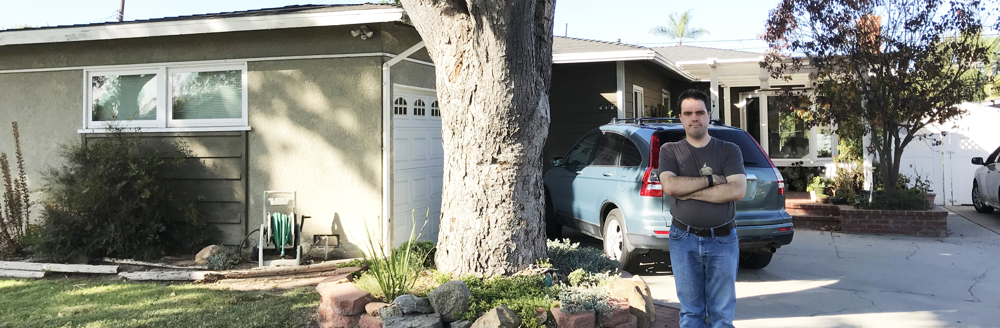

Thomas Wiencek's Personal Website
Introduction
Hello, there. This is Thomas. And welcome to my personal website. This website is in which you'll be able to check out pages under the main menu that talks about me on my intro webpage here, my portfolio, my Pokémon stuff, my music, my writings, my drawings, my animations, my games, and my works. Please proceed, thanks. :)
I have lived in Santa Ana with my parents, two sisters and brother my whole life. I attended school in Santa Ana Unified School District and graduated from Century High School in 2004. I then attended Santa Ana College and earned a Digital Media Arts Certificate with an emphasis in graphic design. I am interested in Pokémon, drawing Pokémon and western anime and manga drawings in Adobe Illustrator and I like to study popular music using Joel Whitburn reference books. I enjoy practicing and playing music on the piano and guitar. I enjoy taking LinkedIn Learning, Pluralsight and other tutorials, including with my dad on learning to use productivity and creativity software.
I was an Office Assistant Clerk with Integrated Resource Institute since March 2018 until I was laid off at the end of March 2021. As of October 2021, I have right now been an intern for my paid internship program at Spatial Wave.